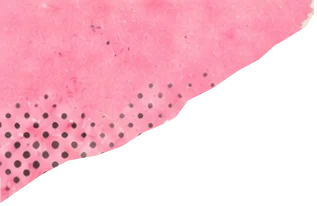
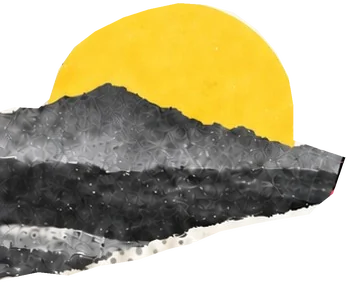
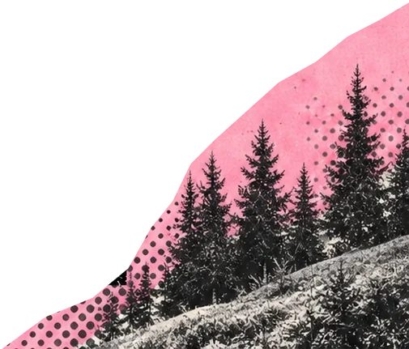

Teachingwith,about,andwithoutAI



Generative AI is already in classrooms, whether or not a school has decided anything about it. This professional development day will be about what these systems actually are and do, what this means for teaching and assessment, and how educators and students can make more deliberate choices about where and how AI belongs, and where it does not.
The day will be discussion-led. We’ll work through real classroom situations, try a few things in Microsoft Copilot, and reconsider something you already teach. We’ll also begin gathering questions and priorities that could inform future classroom- and school-level guidance around AI. (You’ll notice I don’t love the “tool” metaphor, but we’ll talk about that.)
The day
Every block has something to try and something to discuss. Timings and emphasis can shift in response to the pre-session input and the conversation in the room.
Welcome
A chance to reconnect, introduce the day, and begin with what matters to us in teaching and learning.
What are these strange systems, anyway?
A plain-language introduction to how generative AI systems compose outputs, and the minimum technical background we need to make informed decisions about them. Then we experiment and see what happens.
Classroom situations
Small groups work through real and plausible situations involving generative AI in teaching and learning. We look closely at what is happening, what choices are available, and what different responses might mean for students, teachers, and the classroom.
- Break
How should AI fit into classroom work?
A look at several ways educators and schools are approaching AI use in learning and assessment, from blanket rules to more nuanced frameworks such as the AI Assessment Scale. We consider what each approach makes possible, what assumptions it carries, and where it might break down in different K-12 contexts. Then we use a collaborative protocol to make decisions about AI use in a real classroom activity or assignment.
Some things worth trying in Copilot
A hands-on look at a small number of useful things generative AI can do for teaching: generating alternatives, explaining something in different ways, creating examples and counterexamples, testing instructions, looking for gaps, and helping you see a lesson from another angle. Try a few with something you actually teach and decide what is useful, what is not, and what you would want to change.
- Lunch
Rethinking something you already teach
Bring a lesson, activity, assignment, or unit you already teach. We use what we have explored so far to reconsider where AI might support the learning, where it might change or bypass something important, and where it may not belong at all.
Looking at the bigger picture
We use the Entangled Dimensions of AI Literacy framework to step back from individual classroom uses and explore some of the wider questions connected to AI: knowledge, relationships, institutions, resources, values, and planetary systems. Participants explore the framework themselves and use it to look at a classroom example, question, or concern from another angle.
- Break
From classroom choices to collective decisions
We bring together the questions that have surfaced throughout the day and consider what can be decided by an individual educator, what may need shared school guidance, and what calls for broader community conversation. We look at emerging approaches elsewhere as possibilities to examine, not templates to adopt.
What needs to be decided here, who needs to be part of that decision, and what should remain open?
Close
We close by imagining the kinds of futures with AI we would want to move toward, and the ones we would want to resist.
What educators leave with
- The Entangled Dimensions of AI Literacy framework with prompts for exploring AI as more than a tool. Frameworks
- A simple “with, about, or without?” planning guide for deciding whether, where, and why AI belongs in a particular learning activity.
- A small collection of approaches for thinking about AI use in teaching and assessment including a collaborative decision-making protocol adaptable across grades and contexts. Policy examples · Protocol
- A set of practical Copilot ideas and prompts to experiment with in planning and teaching. Copilot and prompting
- Adaptable K-12 activities for teaching about AI including options that do not require students to have AI accounts. Activities
- One lesson, activity, or assignment of their own reconsidered or redesigned in light of the day.
- A staff-generated set of questions and priorities to carry forward into future classroom, school, and community conversations about AI guidance and policy.
After the day
If it would be useful, we can keep some of these conversations going after November. Possible next steps might include:
- A policy session: a 60-90 minute online session in the new year, working from the questions that emerge during the day toward classroom- or school-level guidance.
- A short check-in: a few weeks later, a chance to share what you tried, what happened, and what questions are still hanging around.
- An ongoing AI literacy partnership: continued planning support, conversation, and another session later in the year.
A note on context
I am coming to this as an educator, researcher, and lecturer in UBC’s Master of Educational Technology program. When I work with a school community I am not part of, questions involving local knowledge, language, data, and protocols carry particular significance. Some questions about AI can be worked through at the classroom level; others may belong at the school or community level. Where those boundaries arise, we can name them together, and leave them with the people they belong to.
Frameworks we’ll use
The day draws on two open frameworks developed through work at UBC:
Entangled Dimensions of AI Literacy
A way of looking beyond the immediate use of an AI system to the wider questions of knowledge, relationships, institutions, resources, values, and planetary systems.
Computational Sense-Making
A way of looking more closely at what computational systems are doing, how they produce outputs, and how we make sense of them.
Both are freely available and will remain available after the session.
Everything on this site
AI map
Who makes what in AI: companies, models, apps, and the other kinds of AI that rank, sort and predict.
Classroom situations
Ten fictional cases grounded in research and reporting, with Copilot prompts and a group response.
Policy examples
Twenty K to 12 AI policies to examine, not templates to adopt.
Handouts
What these systems are, practical moves, the collaborative protocol, and Copilot and prompting.
Activities
Twenty short moves for students and for staff, about AI and with AI.
Readings
Fifteen recent readings on assessment, feedback, lesson planning, students’ use and refusal.
Use it offline
Every page works on its own: open it, save it from your browser, and it runs without an internet connection. To keep the whole site with its links and images, download it as a zip, unzip it, and open index.html. The cards, activities and handouts also print cleanly.
Contact
Rachel Horst, PhD
University of British Columbia
rachel.horst@ubc.ca